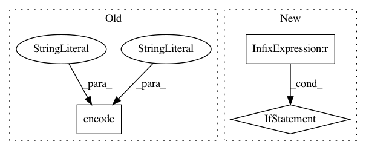

d9f4448777a924ed71d82bf84eda6bb88fd96641,pycox/callbacks.py,PlotProgress,on_epoch_end,#PlotProgress#,112
Before Change
.melt(id_vars=["epoch"],
value_vars=df.columns,
var_name="data", value_name="loss"))
(alt.Chart(df).mark_line().encode(
color="data:N",
x="epoch",
y="loss",
).savechart(self.filename+".vl.json", "json"))
return False
After Change
self._first = False
return False
if self.type == "altair":
self.plot_altair()
return False
plt.style.use(self.style)
self.to_pandas().plot()
plt.savefig(self.filename+"."+self.type)
plt.close("all")
In pattern: SUPERPATTERN
Frequency: 3
Non-data size: 3
Instances
Project Name: havakv/pycox
Commit Name: d9f4448777a924ed71d82bf84eda6bb88fd96641
Time: 2018-03-13
Author: kvamme@samba8.ad.nr.no
File Name: pycox/callbacks.py
Class Name: PlotProgress
Method Name: on_epoch_end
Project Name: akkana/scripts
Commit Name: 4b660c262a857f0d3bcc41d56e12af35f7d3f6ec
Time: 2018-10-26
Author: akkana@shallowsky.com
File Name: epubtag.py
Class Name: EpubBook
Method Name: get_matches
Project Name: andresriancho/w3af
Commit Name: 9d6f4b655bcc3ea20e223959448e1fc846358831
Time: 2017-10-07
Author: andres.riancho@gmail.com
File Name: w3af/plugins/audit/csrf.py
Class Name: csrf
Method Name: is_csrf_token